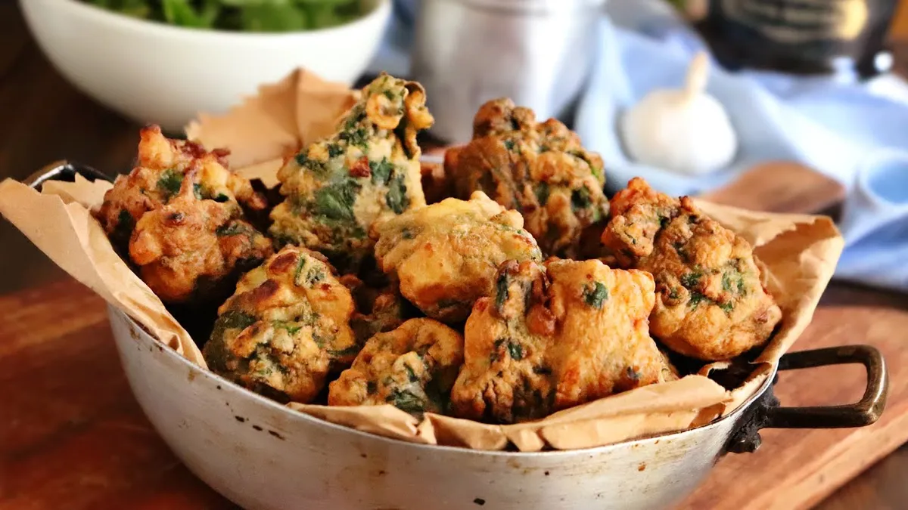
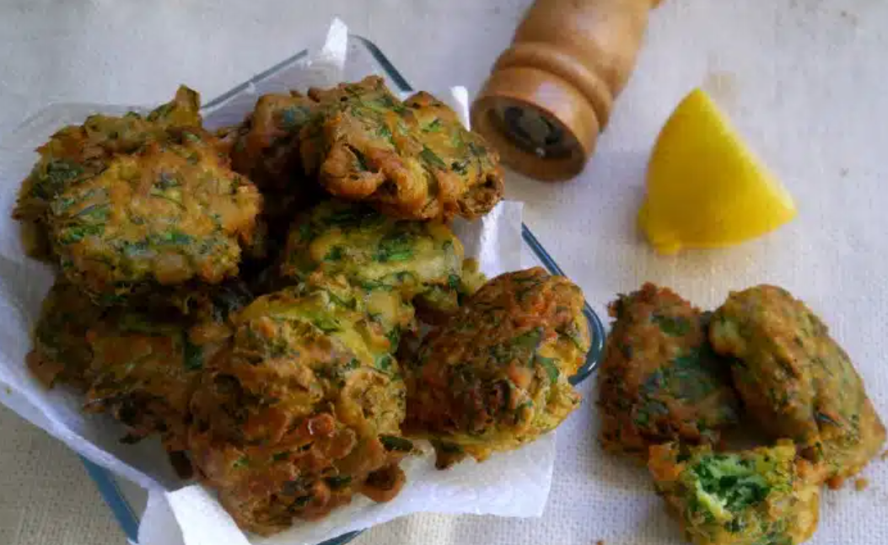

Buñuelos de espinaca
Ingredientes
- 1 atado de espinaca
- 2 huevos
- 1/2 pote de crema
- 1/2 taza de harina leudante
- 1 diente de ajo
- Sal, pimienta y aceite
Preparación
- Lavar la espinaca, escurrirla y cortar en tiras lo más finas que puedas, se puede picar también. Picar el ajo.
- Batir el huevo y, cuando esté bien batido, agregar la crema o leche, unir bien y salpimentar.
- Agregar a la mezcla la espinaca y el ajo y revolver bien. Incorporar la harina, si es posible tamizada, y mezclar bien. Debe quedar una mezcla espesa, no una masa. Pero bien espesa porque formaremos los buñuelos
- Calentar aceite para freír y, de a uno, ir poniendo cucharadas de la mezcla para que se frían. Dorar de ambos lados, dando vuelta a mitad de la cocción. ¡Ojo! Estos buñuelos de espinaca se hacen rapidísimo, aproximadamente un minuto de cada lado, así que no te muevas de al lado de la sartén y tené a mano la fuente con papel absorbente para sacarlos.

